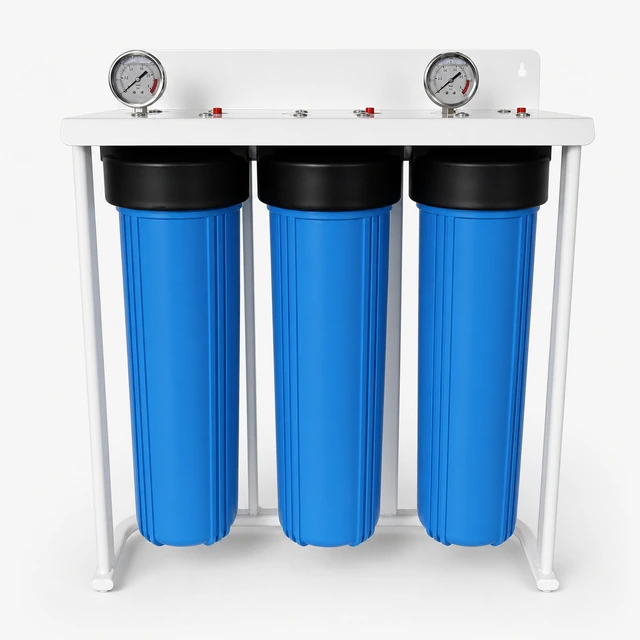
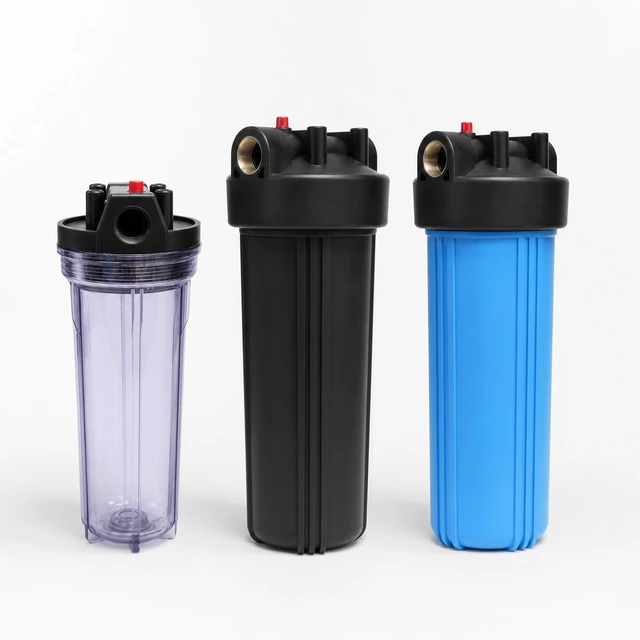

Hệ thống lọc nước Big Blue 20-Inch ba cấp
- Loại hệ thống
- 3 × Big Blue
- Loại cốc lọc
- 20″
- Các cấp lọc
- 3
Nhà sản xuất vỏ lọc nước cung cấp vỏ PP, Big Blue và thép không gỉ 304. Có tùy chọn 316L, cổng kết nối OEM, giá đỡ, nhãn và bao bì.
So sánh các model được liệt kê và mở trang chi tiết. Các bản ghi model được tính riêng với các kích thước có thể tùy chỉnh; mức độ phù hợp phải được xác nhận cho dự án của bạn.


Vỏ lọc nước chứa các lõi lọc cặn, than, UF và lõi chuyên dụng trong hệ thống lọc dân dụng, thương mại và công nghiệp. Yuchen Water cung cấp vỏ PP, vỏ Big Blue và vỏ thép không gỉ 304 cho nhà phân phối và khách hàng mua cho dự án, với tùy chọn 316L cho các dự án tùy chỉnh.
Các ứng dụng bao gồm lọc nước toàn nhà, bếp thương mại, tiền xử lý RO, nước phục vụ quy trình công nghiệp, biệt thự và các chương trình cung ứng lõi lọc thay thế. Việc lựa chọn vỏ lọc phụ thuộc vào lưu lượng, áp suất, không gian lắp đặt, kích thước lõi lọc và cấp vật liệu yêu cầu.
| Vật liệu | PP, PP gia cường, SUS 304, SUS 316L |
|---|---|
| Kích thước | 10 inch, 20 inch, Big Blue, jumbo và tùy chỉnh |
| Cổng kết nối | Tùy chọn NPT/BSP |
| Ứng dụng | Lọc nước toàn nhà, thương mại và công nghiệp |
| Tùy chọn OEM | Cổng kết nối, màu sắc, giá đỡ, đồng hồ đo, nhãn và thùng carton |
Các lựa chọn OEM/ODM bao gồm vật liệu, kích thước cổng kết nối, màu sắc, giá đỡ, dụng cụ vặn vỏ lọc, đồng hồ áp suất, nhãn, bảng tên, thùng carton và đóng gói trên pallet. Các mẫu thép không gỉ có thể được báo giá với tùy chọn hoàn thiện bề mặt và cấu hình cổng kết nối.
Lựa chọn vỏ lọc Big Blue, vỏ PP hoặc vỏ lọc thép không gỉ 304 cho hệ thống vỏ lọc dùng lõi theo chiều dài lõi lọc, kích thước cổng kết nối, áp suất định mức, phương thức làm kín, yêu cầu về giá đỡ và khả năng tiếp cận để thay lõi.

Vỏ lọc nước Jumbo bằng thép không gỉ SUS 304 dành cho lõi lọc 10 inch và 20 inch — Đồng hồ áp suất: Đồng hồ áp suất tùy chọn.
Gửi yêu cầu
Hệ thống lọc nước Big Blue 20-Inch ba cấp — Số cấp lọc: 3.
Gửi yêu cầu
Vỏ lọc nước 10 inch và 20 inch dành cho lõi lọc thay thế — Đầu nối: 1/4″ / 1/2″ / 3/4″ / 1″.
Gửi yêu cầu
Máy lọc nước RO Big Blue dùng cho hoạt động thương mại 400G-800G — Quy trình xử lý: Lõi tiền lọc PP Big Blue 10-inch + RO + T33.
Gửi yêu cầu
Máy lọc nước RO Big Blue cao cấp, lưu lượng lớn, dùng cho hoạt động thương mại 800G-1600G — Quy trình xử lý: Lõi PP đường kính lớn 10-inch + lõi lọc composite bông–than đường kính lớn 10-inch + RO×2.
Gửi yêu cầu
Thiết bị lọc nước thẩm thấu ngược PP Big Blue 20-Inch một bình 250-500 L/h — Quy trình xử lý: Lõi tiền lọc PP Big Blue 20-inch + RO.
Gửi yêu cầuCó. Chi tiết về bao bì và ghi nhãn được xác nhận theo model và phạm vi đơn hàng.
Cung cấp model, số lượng và nơi giao hàng để nhận báo giá.